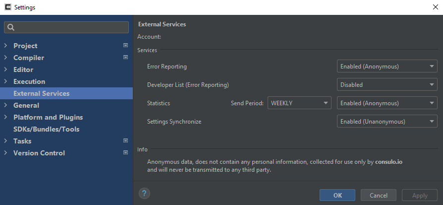

External Services
This information is collected for use only by consulo.io and will never be transmitted to any third party.
This is where you manage your consulo.io services.
The consulo.io account you are signed into is shown at the top of the window.
Services
- Error Reporting - Default: Enabled (Anonymous)
Whether to send anonymous or identifiable error reporting data to consulo.io.
This helps the developer(s) maintain the IDE and fix these errors.
Supports sending anonymous or identifiable data. - Developer List (Error Reporting) - Default: Disabled
Whether to attach a list of developers to your error reporting data when it is sent to consulo.io.
This is used to assign a developer inside the Error Reporter dialog.
This option is not available for non-developer accounts.
Does not support sending only anonymous data. - Statistics - Default: Enabled (Anonymous)
Whether to send statistical analytics data to consulo.io.
This helps the developer(s) understand the common usage of the IDE.
Supports sending anonymous or identifiable data.- Send Period
The frequency in which to updates about your usage statistics to consulo.io.
- Send Period
- Settings Synchronize - Default: Disabled
Whether to synchronize your IDE settings with your consulo.io account.
This helps you keep your IDE settings across multiple installations of Consulo.
Does not support sending only anonymous data.
Data Anonymity
- Disabled Data will not be sent to consulo.io.
- Unanonymous Personally identifiable data will be sent to (only if user authorized. For view stored data as hub.consulo.io) consulo.io.
- Anonymous No Personally identifiable data will be sent to consulo.io.
